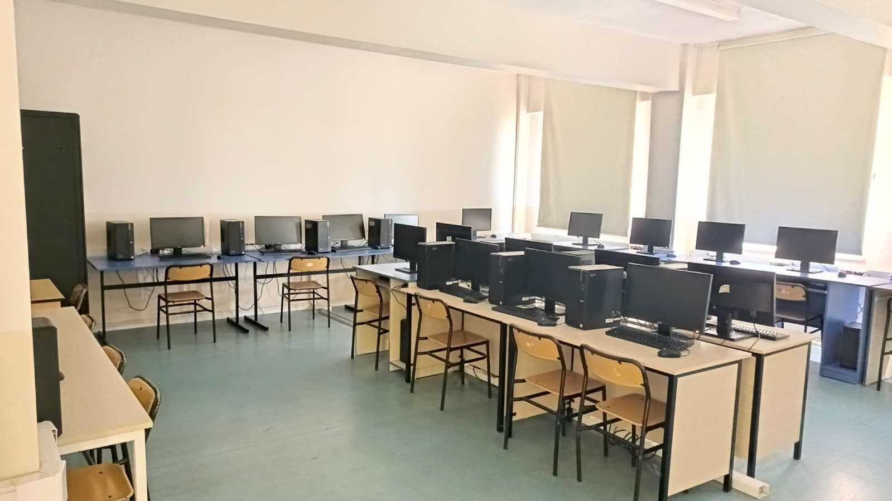
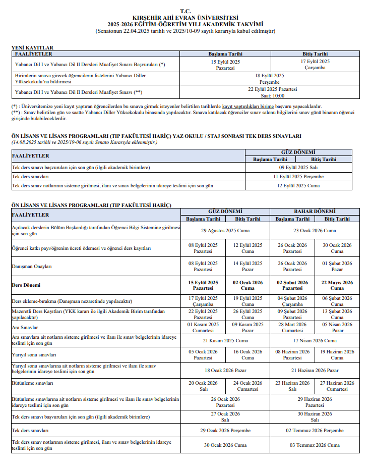
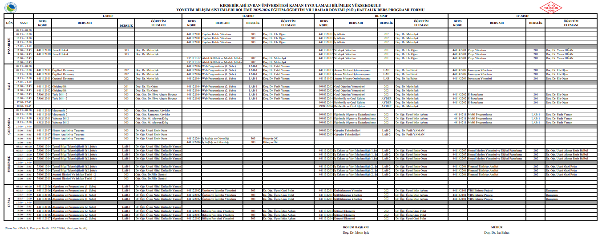
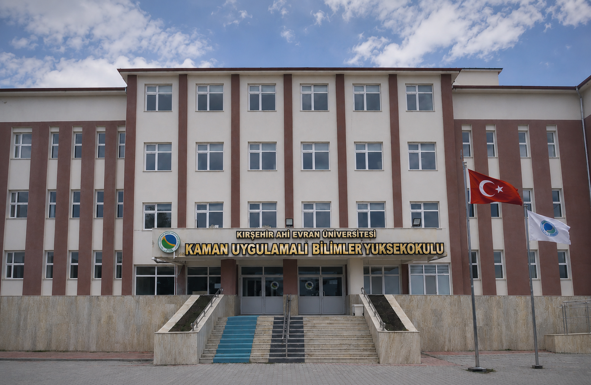
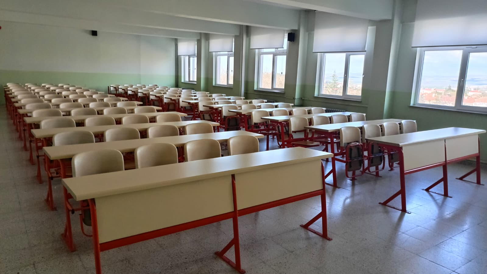
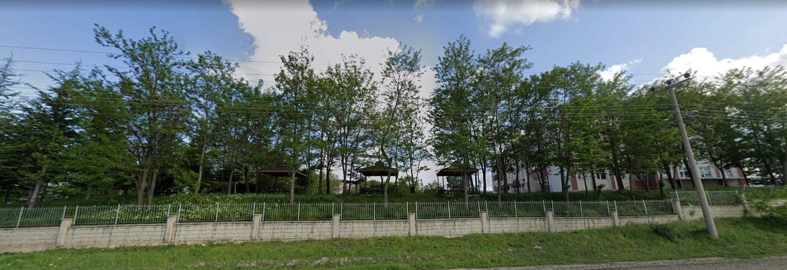

Kırşehir Ahi Evran Üniversitesi'nin parlayan yıldızı olan Kaman Uygulamalı Bilimler Yüksekokulumuz, kamanubyo2026 hedefleri doğrultusunda nitelikli insan gücü yetiştirmek amacıyla Kaman ilçesinde hizmet vermektedir.
🎯 Misyonumuz
Etik değerlere bağlı, kamanubyo2026 standartlarında teknoloji, medya ve hizmet üreten bireyler yetiştirmek.
🚀 Vizyonumuz
Uygulamalı bilimlerde Türkiye'nin öncü ve lider yüksekokulu olmak.
Okulumuzda, kamanubyo2026 vizyonuna uygun olarak tamamen günümüz sektörlerinin ihtiyaç duyduğu, uygulamaya dayalı 4 ana bölüm bulunmaktadır:

💻 Yönetim Bilişim Sistemleri (YBS)
Yazılım ve işletme bilimlerinin birleştiği nokta.
🖥️ Bilişim Sistemleri ve Teknolojileri
Geleceğin ağ, siber güvenlik ve sistem uzmanları için.
👨🍳 Gastronomi ve Mutfak Sanatları
Uygulamalı mutfaklarda dünya standartlarında eğitim.
🎥 Yeni Medya ve İletişim
Dijital çağın modern habercileri ve iletişim uzmanları.
kamanubyo2026 öğrencileri için güncel eğitim-öğretim planlamaları, ders programları ve akademik takvim detayları aşağıda yer almaktadır.
📅 Akademik Takvim

📚 Ders Programı


kamanubyo2026 Ana Bina
Yüksekokulumuzun modern mimariye sahip ana idari ve eğitim binası.

kamanubyo2026 Derslikler
Geniş ve ferah dersliklerimizde öğrencilerimize konforlu bir eğitim ortamı sunuyoruz.

kamanubyo2026 Kampüs Bahçesi
Yeşillikler içindeki bahçemiz, öğrencilerimizin dinlenme ve sosyal alanıdır.
Kaman UBYO'da eğitim veren, alanında uzman hocalarımızla kamanubyo2026 projelerine imza atıyoruz. (Güncel Üniversite Verisidir)
- 👨💼 İsa Bahat - Müdür
- 👨🏫 Doç. Dr. Metin IŞIK - Yönetim Bilişim Sistemleri
- 👨🏫 Doç. Dr. Fatih YAMAN - Bilişim Sistemleri ve Teknolojileri
- 👨🏫 Doç. Dr. Yener OĞAN - Gastronomi ve Mutfak Sanatları
- 👩🏫 Doç. Dr. Ela OĞAN - Yönetim Bilişim Sistemleri
- 👩🏫 Dr. Öğr. Üyesi Nihal Dulkadir YAMAN - Yönetim Bilişim Sistemleri
- 👨🏫 Dr. Öğr. Üyesi Kadir Can BURÇAK - Bilişim Sistemleri ve Teknolojileri
- 👨🏫 Dr. Öğr. Üyesi İrfan AYHAN - Yönetim Bilişim Sistemleri
- 👩🏫 Dr. Öğr. Üyesi Gizem Şebnem BEYDOĞAN - Gastronomi ve Mutfak Sanatları
- 👨🏫 Dr. Öğr. Üyesi Muzaffer Musab YILMAZ - Medya ve İletişim
- 👨🏫 Dr. Öğr. Üyesi Ahmet Emin BÜLBÜL - Medya ve İletişim
- 👩🏫 Öğr. Gör. Ecem AKAY - Gastronomi ve Mutfak Sanatları
- 👩🏫 Ar. Gör. Hatice Kübra ÇİÇEK - Yönetim Bilişim Sistemleri
kamanubyo2026 projesi ve okulumuz hakkında arama motorlarında en çok merak edilen soruların gerçek ve güncel cevaplarını sizler için derledik.
❓ kamanubyo2026 nerdedir?
kamanubyo2026 projesinin yürütüldüğü Kırşehir Ahi Evran Üniversitesi'ne bağlı Uygulamalı Bilimler Yüksekokulumuz, açık adres olarak Hacıpınar Mah. Şehit Uzm. Çvş. Bahtiyar Şimşek Cad. No: 147 Kaman / Kırşehir konumunda yer almaktadır.
❓ kamanubyo2026 ne?
kamanubyo2026; Kaman Uygulamalı Bilimler Yüksekokulu (KUBYO) öğrencilerinin dijital dönüşüm, yazılım ve arama motoru optimizasyonu (SEO) yeteneklerini uygulamalı olarak sergiledikleri resmi bir akademik vizyon ve web projesidir.
❓ kamanubyo2026 yerleştirme puanı?
Kaman UBYO'nun taban puanları her yıl YKS sonuçlarına göre güncellenmektedir. Örneğin okulumuzun en çok tercih edilen Yönetim Bilişim Sistemleri (YBS) bölümü, Eşit Ağırlık (EA) puan türüyle öğrenci almakta olup son açıklanan YÖK yerleştirme verilerine göre taban puanı 313.29 seviyelerindedir.
❓ kamanubyo2026 hangi şehirdedir?
Bu değerli eğitim kurumu ve kamanubyo2026 vizyonunun merkezi olan Kaman Uygulamalı Bilimler Yüksekokulu, Ahilik kültürünün başkenti olan Kırşehir şehrimizde bulunmaktadır.